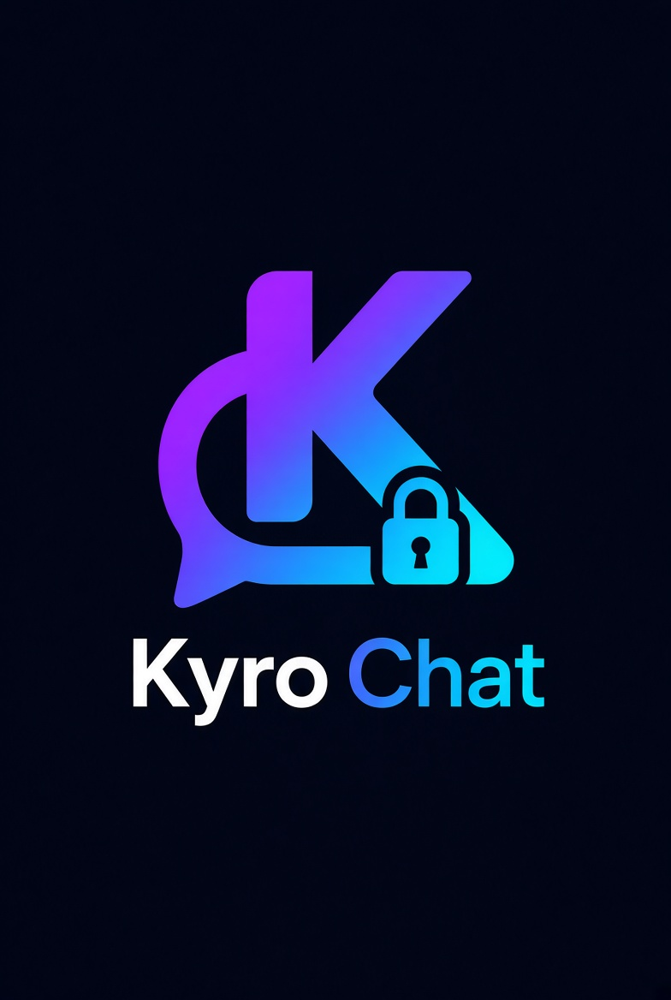
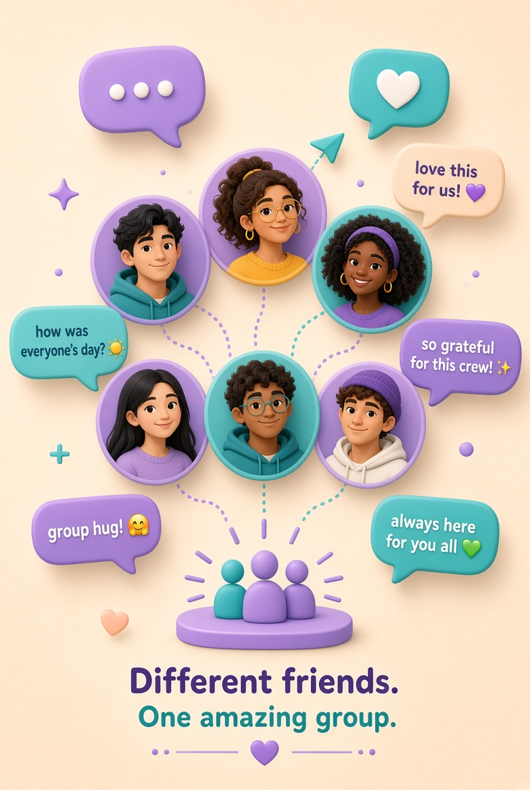

Kyro Chat
A better way to connect
Welcome to Kyro Chat
Chat privately, share moments, and stay close to the people who matter most.

Privacy by design
End-to-end encryption
Your conversations are protected so your messages stay between you and the people you choose.

VoiceVideo
Talk like you are there
Make seamless calls with Kyro Chat
Move from messages to clear voice and video calls without leaving your conversation.

Together is better
Engage in groups and communities
Bring people together, share ideas, and keep every community conversation in one place.

The people behind Kyro
Founded by Vaeltech & Jose Grid
Built with care to make private communication feel simple, human, and beautiful.
Your conversations, your space
Ready to join Kyro Chat?
Create an account or sign in to start private conversations today.
By continuing you agree to our Terms and Privacy Policy.